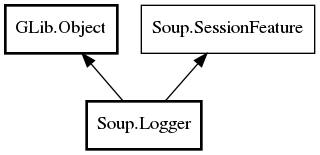

Soup.Logger Reference Manual
Packages
libsoup-2.4
Soup
Logger
Logger
set_printer
set_request_filter
set_response_filter
Logger
Object Hierarchy:

Description:
public
class
Logger
:
Object
,
SessionFeature
Namespace:
Soup
Package:
libsoup-2.4
Content:
Creation methods:
public
Logger
(
LoggerLogLevel
level,
int
max_body_size)
Methods:
public
void
set_printer
(
owned
LoggerPrinter
printer)
public
void
set_request_filter
(
owned
LoggerFilter
request_filter)
public
void
set_response_filter
(
owned
LoggerFilter
response_filter)